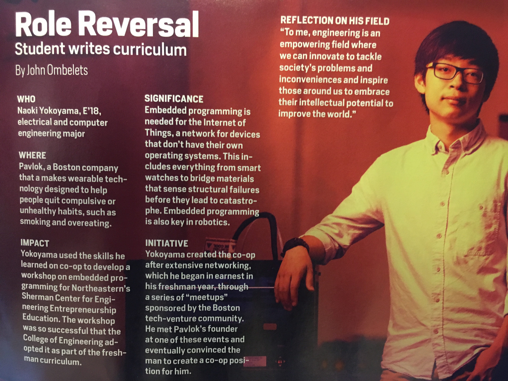

Shengchen Liu

I am a research scientist from New York City, and earned my MS and BS in Electrical and Computer Engineering concentrating in Computer Vision and Machine Learning, at Northeastern University. I have always been passionate about tackling open-ended problems and making life easier using technology. During high school and my first few years of college, this passion manifested itself through many professional experiences, personal projects, and teaching positions in the field of robotics. Since then, I became involved with machine learning and computer vision, and quickly became fascinated by AI and its applications in intelligently performing tasks that previously could only be done by humans. My research interests lie in improving deep learning and computer vision methods in order to develop AI that can learn as efficiently or even better than a human learner.
Merit Awards & Honors
The video I previously played on my homepage

I got featured in Northeastern's magazine for my work teaching at the Sherman Center